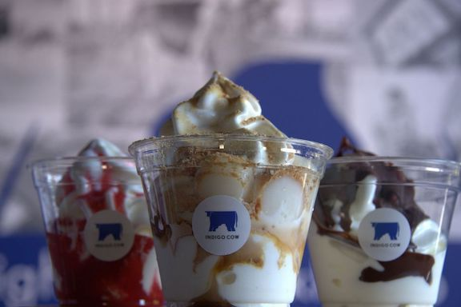
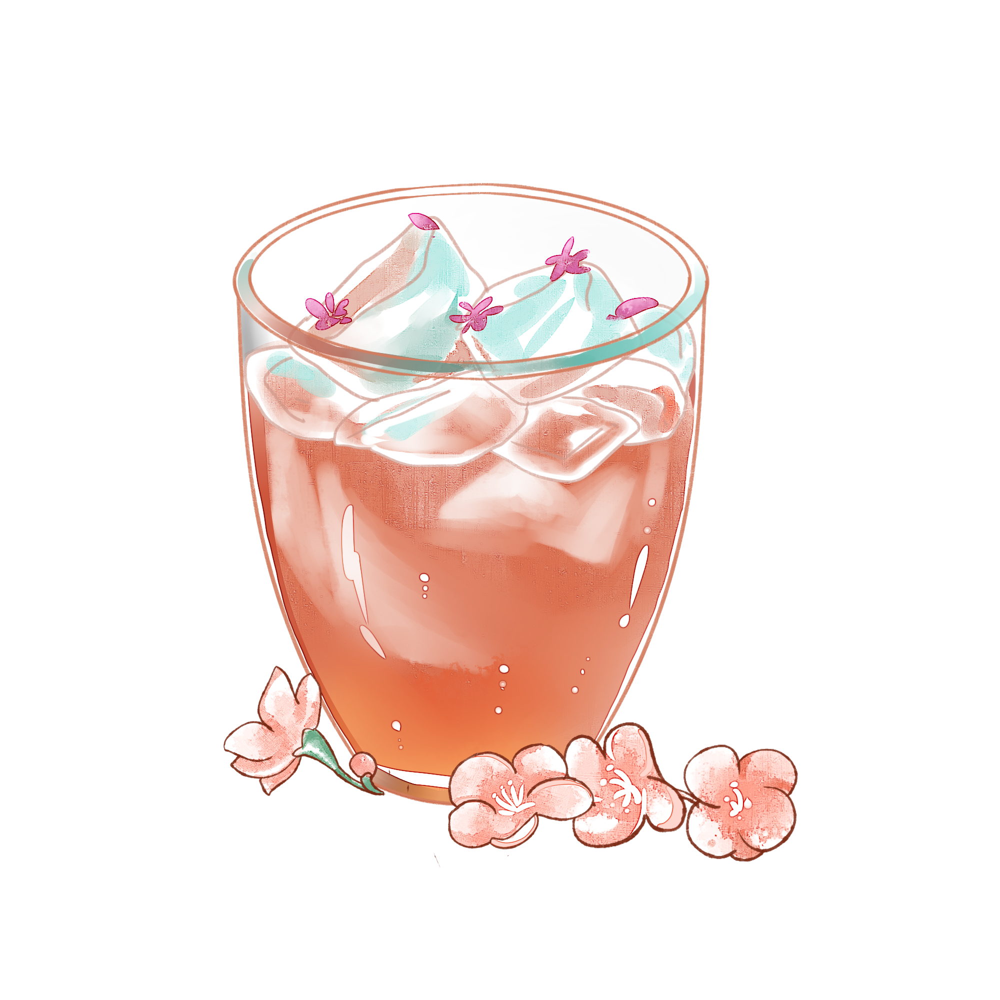
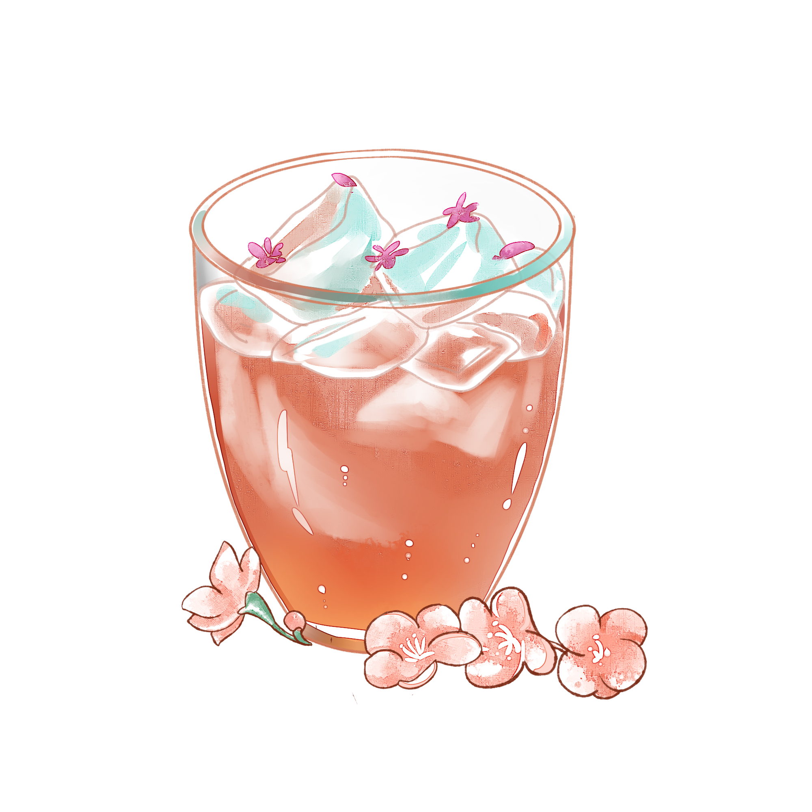

Nana's Green Tea is a modern Japanese cafe specializing in green teas and Japanese foods and desserts.
delivered in a modern fashion. We are a global matcha brand originating from Tokyo, Japan.We incorporate traditional Japanese ingredients such as matcha, azuki, warabimochi in new, creative ways of presentation.

At Indigo Cow, introduce the tasty and time-honored tradition of Hokkaido dairy in Seattle with the first ice cream shop in America to make soft serve with milk from Hokkaido. Hokkaido's nutrient-rich grass, cool climate and crisp air provide the ideal environment for the region's treasured dairy cows.
Taneda offers Omakase course meals and the majority part of Omakase sushi employs Edomae style, which has its beginnings in the 1820s when Tokyo was still being called Edo. While Edomae style cuisines require a lot of time and skills for delicate preparations and require chefs to perform hand-rolled sushi at a fast pace in front of customers. In the Omakase course meals, chef Taneda selects special local ingredients and uses the traditional Edomae method to create authentic Japanese cuisines refined with truly Northwest flavor - a feat achievable because of his unique experiences as a chef in both Tokyo and Seattle.
 
